GROOVE · 록 3부작 · 대관식
무대의 주인이 바뀐 게 아니라, 원래 주인이 따로 없었다는 이야기. 3부는 메탈에서 팝펑크까지 모든 전선에서 왕관을 쓴 현재 — 저항이 계보가 된 21세기의 기록이다.
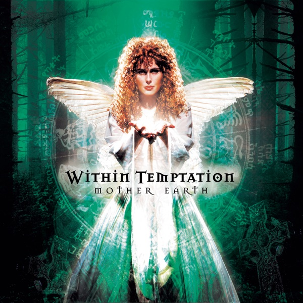
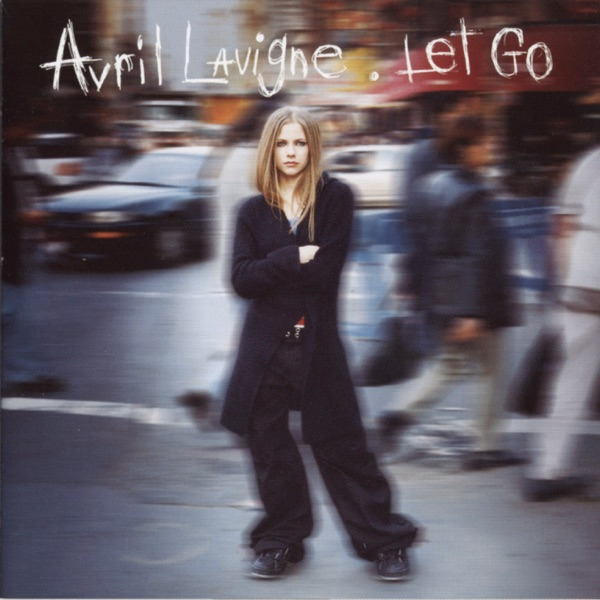
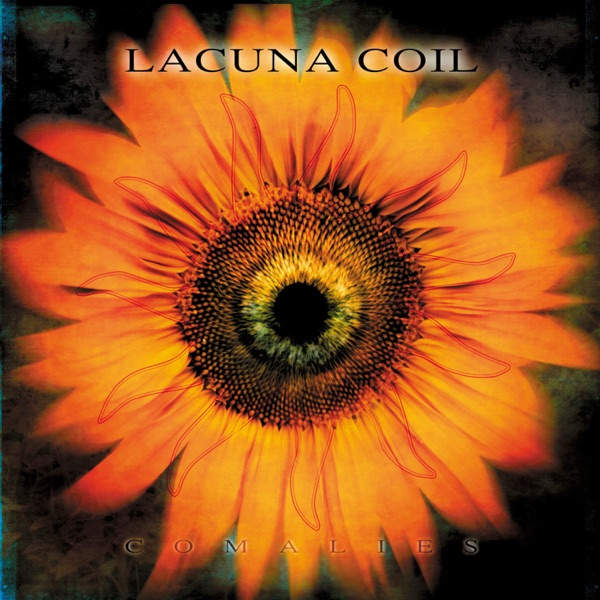
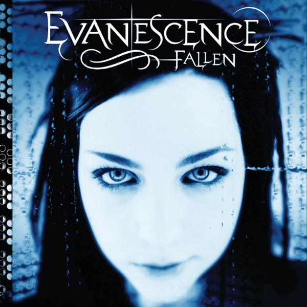
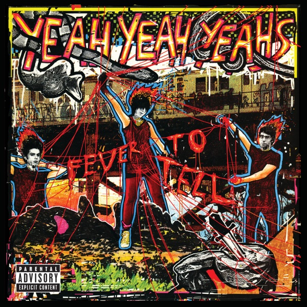
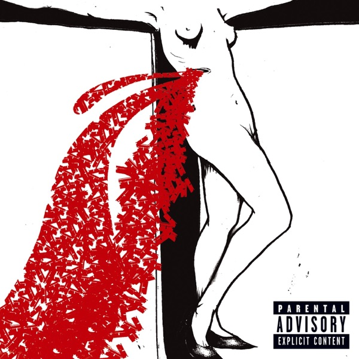
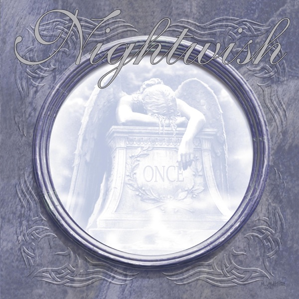
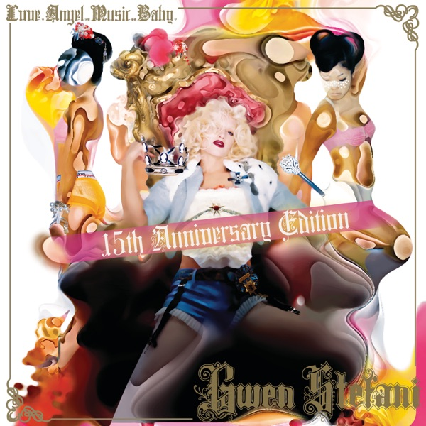
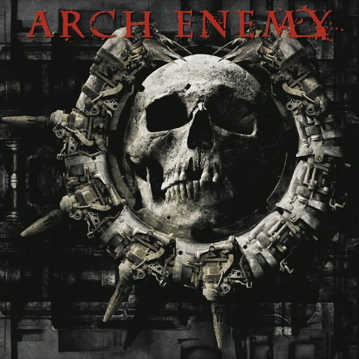
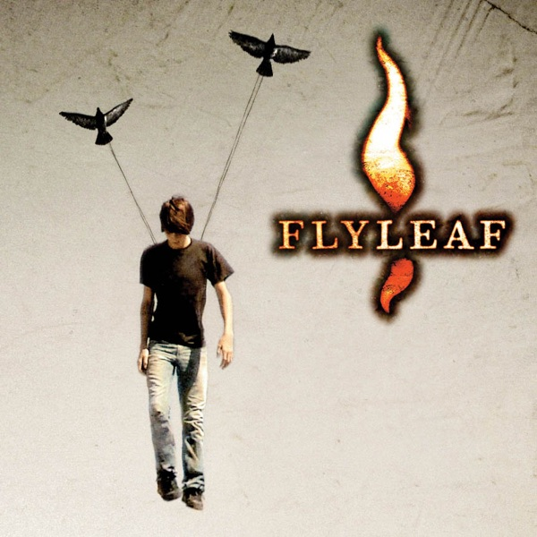
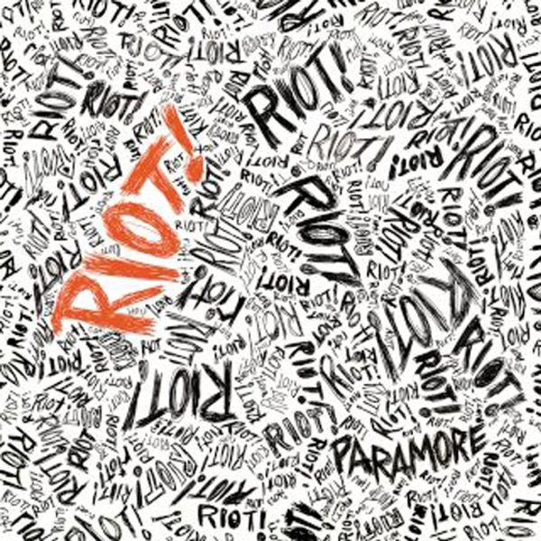
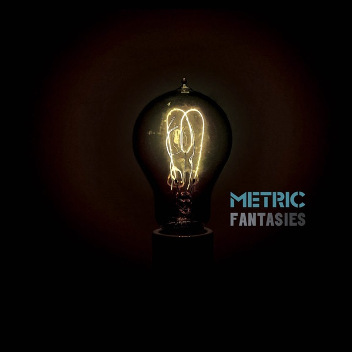
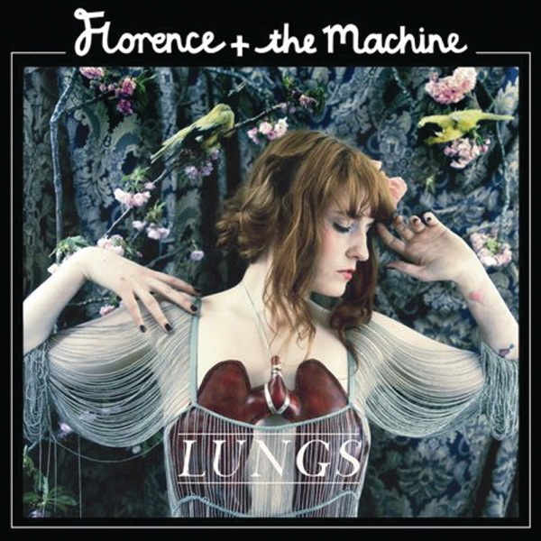
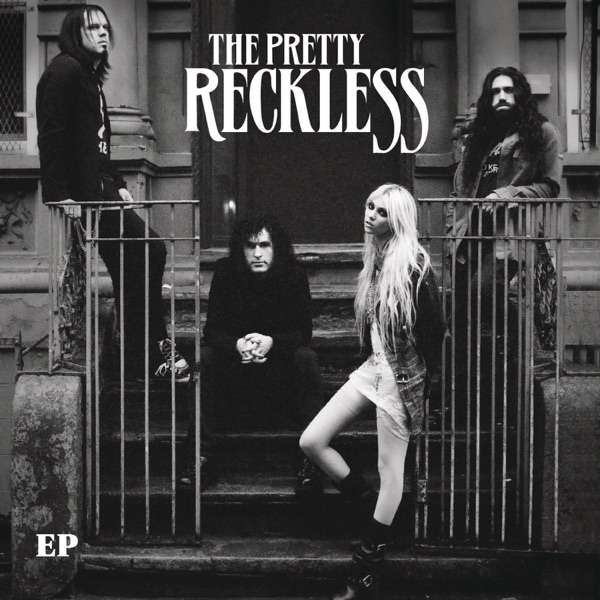
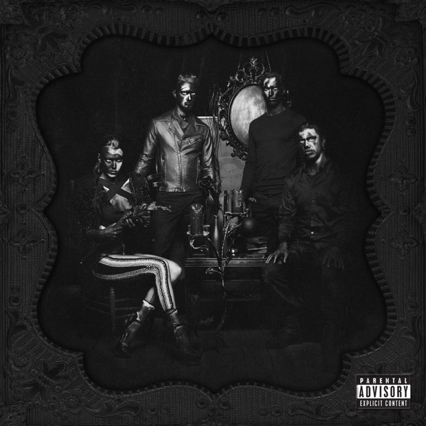
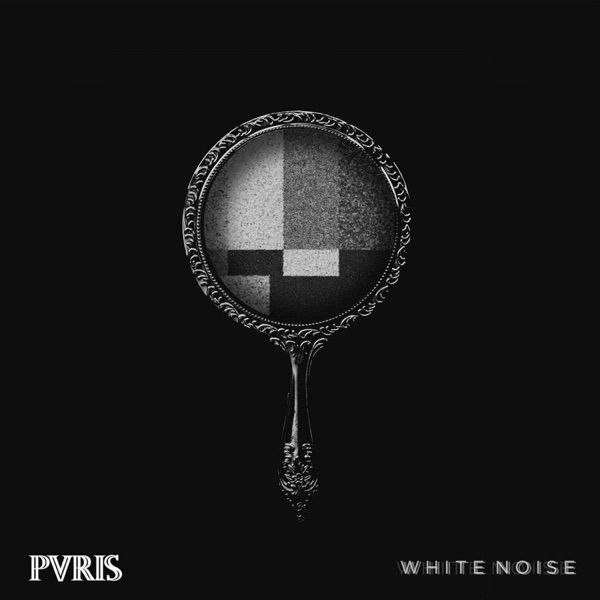
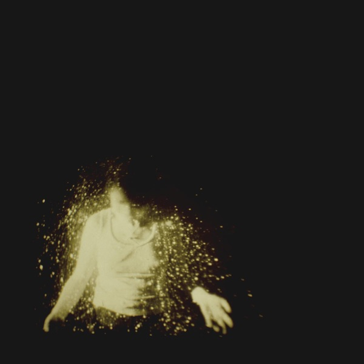
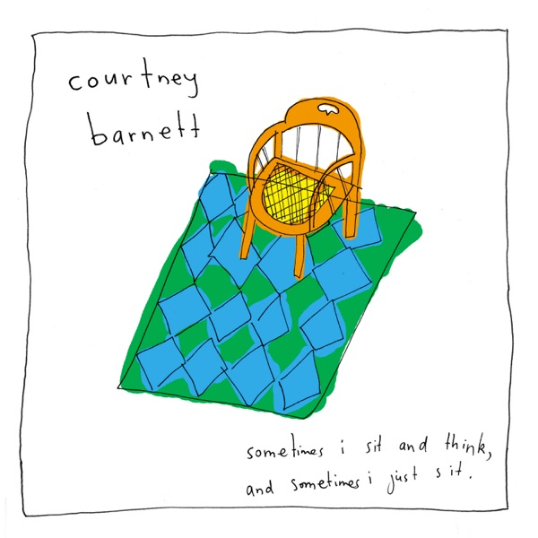
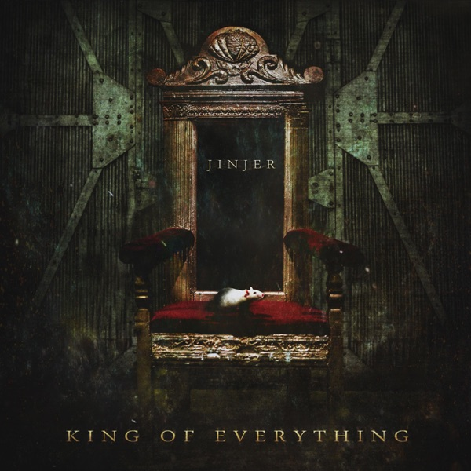
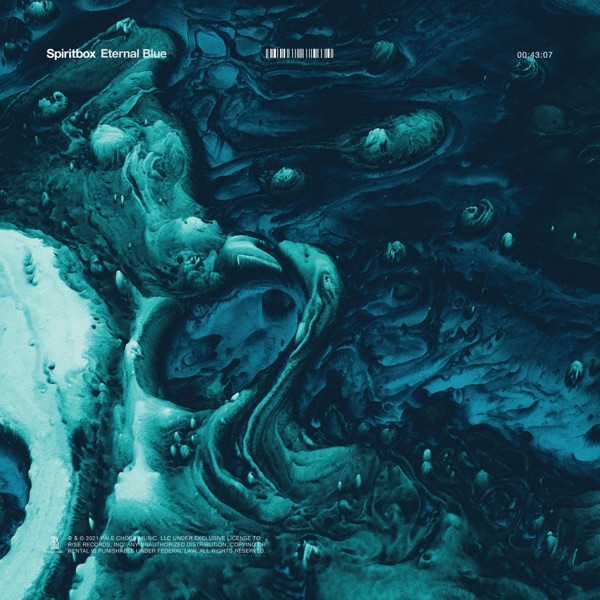
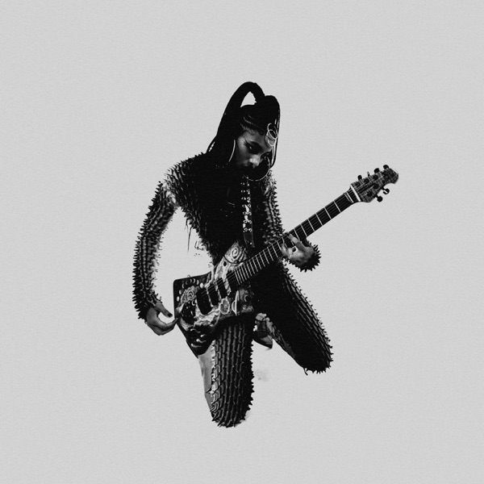
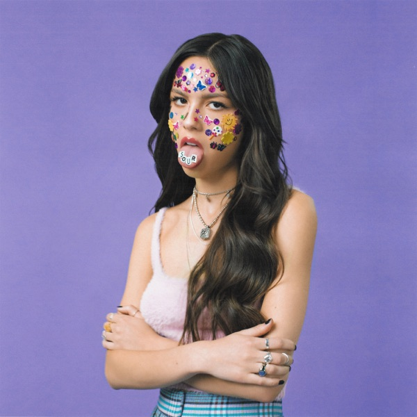
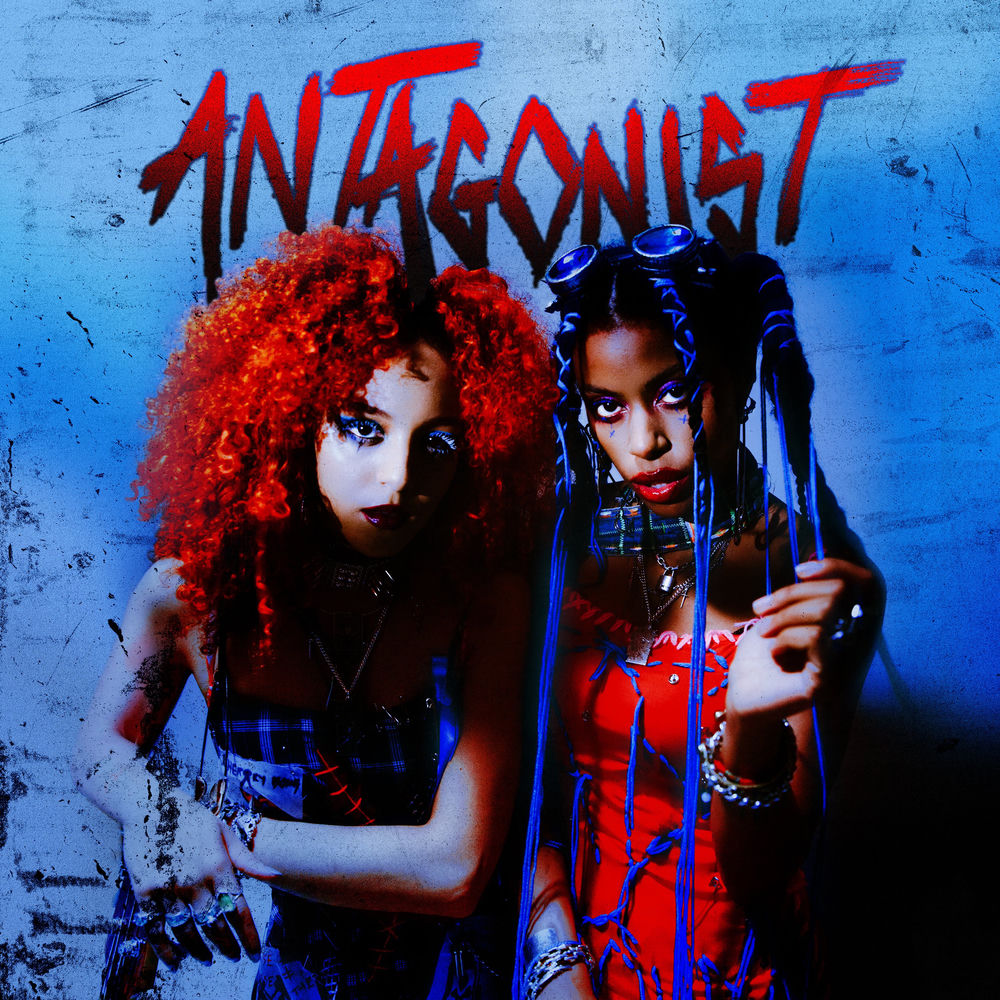
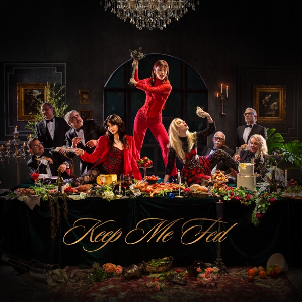
록 3부작 제3부 — 21세기 · 24곡 · 글 비바체
Within Temptation
네덜란드의 위드인 템테이션은 메탈에 오케스트라와 소프라노를 정면으로 결합했다. 이 곡이 유럽 차트를 휩쓸면서 심포닉 메탈*이라는 말이 대중의 어휘가 됐다. 샤론 덴 아델의 목소리는 오케스트라와 동급으로 선다 — 성량 대결이 아니라 배치의 문제라는 걸 아는 보컬이다.
* 심포닉 메탈 — 오케스트라와 성악을 메탈에 결합한 장르.
Avril Lavigne
열일곱의 에이브릴 라빈은 팝 시장 한복판에 넥타이와 스케이트보드를 들고 나타났다. 3분 24초 안에 서사(발레 소녀와 스케이터 소년), 훅, 태도가 전부 있다 — 팝펑크의 교과서. 20년 뒤 Z세대 팝펑크 리바이벌이 전부 이 곡을 참조점으로 삼는다.
Lacuna Coil
밀라노의 라쿠나 코일은 이 곡으로 이탈리아 고딕 메탈을 미국 록 라디오에 올려놨다. 남녀 트윈 보컬 구조지만 무게중심이 어디 있는지는 듣는 순간 안다 — 크리스티나 스카비아의 목소리는 어둠 속에서 더 선명해진다. 유럽 메탈의 미학이 대서양을 건넌 순간.
Evanescence
인트로 피아노 네 마디로 시대를 연 곡. 에이미 리의 클래시컬한 보컬과 뉴메탈 기타가 충돌하며 1700만 장짜리 앨범 ‘Fallen’을 견인했다. 레이블은 여성 프런트만으로는 안 팔린다며 남성 랩 피처링을 조건으로 걸었고, 에이미 리는 이후 그 조건과 싸우며 밴드를 지켰다. 이 곡 이후 록 보컬의 기본값이 바뀌었다.
Yeah Yeah Yeahs
뉴욕 개러지 리바이벌의 한가운데서 카렌 오는 가장 사나운 무대 매너로 유명했다. 그런 사람이 우는 것처럼 부르는 사랑 노래가 이 곡이다 — 뮤직비디오의 눈물이 연기가 아니었다는 일화까지. 인디 록에서 가장 정직한 3분이고, 이후 수백 곡이 이 곡을 인용하고 샘플링했다.
The Distillers
호주에서 LA 펑크 신의 한복판으로 건너온 브로디 달의 목은 사포다. 디스틸러스의 마지막 앨범에 실린 이 곡은 그 목소리의 정점이다. 펑크의 계보가 90년대에서 끊기지 않고 21세기로 이어졌다는 증거 — 당대에 가장 위험하게 들리던 목소리였다.
Nightwish
핀란드의 나이트위시는 메탈과 오페라가 싸우지 않고 공존하는 법을 보여줬다. 타르야 투루넨의 정식 성악 발성이 메탈 기타 위에 서는 이 곡은 밴드 최대의 히트이자 타르야 시대의 정점이다. 이듬해 밴드가 타르야를 해고하는 사건까지, 심포닉 메탈사의 한 장이 됐다.
Gwen Stefani
노 다웃을 잠시 세워두고 나온 그웬 스테파니의 솔로 출사표. 똑딱이는 시계 소리로 시작해 ‘뭘 기다리냐’고 스스로를 다그친다 — 솔로 전향의 불안을 곡의 소재로 삼는 정공법. 록 프런트가 일렉트로 팝으로 건너가서도 태도를 잃지 않을 수 있다는 증명.
Arch Enemy
스웨덴 멜로딕 데스메탈의 아치 에너미는 2000년 안젤라 고소우를 보컬로 맞았다 — 그로울링을 여성이 한다는 것 자체가 논쟁이던 시절이다. 이 곡의 그로울링*은 그 논쟁을 무의미하게 만들었다. 목소리에 성별 라벨을 붙이는 게 얼마나 게으른 일인지 4분 만에 증명된다.
* 그로울링 — 목을 긁어 으르렁대듯 내는 익스트림 메탈 창법.
Flyleaf
텍사스의 플라이리프는 포스트 그런지와 크리스천 록 사이 어딘가에 있었다. 레이시 스텀의 목소리는 작은 몸에서 나오는 폭발이다 — 속삭임에서 스크림으로 넘어가는 낙차가 이 곡의 동력. 2000년대 중반 미국 록 라디오의 숨은 명곡이다.
Paramore
헤일리 윌리엄스라는 장르의 시작. 남초였던 워프드 투어* 신에서 파라모어는 이 곡으로 단숨에 맨 앞줄로 나왔다. 훗날 윌리엄스는 가사 속 여성 비하 표현을 스스로 문제 삼아 공연에서 곡을 내렸다가, 그 대목을 고쳐 부르며 되살렸다 — 자기 역사와 싸울 줄 아는 록스타는 드물다. 이 후렴을 안 따라 부를 방법은 여전히 없다.
* 워프드 투어 — 1995~2019년 미국 전역을 돈 펑크·이모 순회 페스티벌.
Metric
토론토의 메트릭은 인디 록과 신스팝의 경계에서 가장 오래 살아남은 밴드다. 에밀리 헤인스는 ‘심장이 망치처럼 뛴다’는 무대 공포를 가사로 옮기고, 그 떨림을 신스 리프로 번역했다. 불안을 숨기지 않고 동력으로 쓰는 곡 — 배합비가 정확하다.
Florence + the Machine
플로렌스 웰치는 성가대와 록 밴드를 동시에 데리고 다닌다. 하프와 스톰프 비트 위에서 해방을 명령하는 이 곡 — ‘달려라, 빨리’ — 은 개인의 탈주를 집단의 축제로 바꾼다. 2010년대 페스티벌 헤드라이너 지형을 바꾼 목소리가 여기서 출발했다.
The Pretty Reckless
‘가십걸’의 배우였던 테일러 맘슨이 열여섯에 밴드를 만들었을 때 아무도 진지하게 받지 않았다. 이 곡이 그 꼬리표를 태웠다 — 어둡게 타들어가는 록 발라드를 완전히 장악하는 보컬. 이후 프리티 렉리스는 록 라디오 1위 곡을 차곡차곡 쌓으며 2010년대 하드록의 상수가 된다.
Halestorm
펜실베이니아에서 남동생과 밴드를 시작한 리지 헤일은 정통 하드록의 적자다. 이 곡이 실린 앨범으로 그래미 하드록 부문을 받았다 — 여성이 이끄는 밴드로는 최초였다. 불행이 그립다는 가사를 이렇게 신나게 부른다. 고통을 연료로 쓰는 데 부끄러움이 없는 목소리.
PVRIS
매사추세츠의 PVRIS는 메탈코어 신에서 출발해 신스팝으로 건너온 밴드다. 린 건의 목소리는 차가운데 곡은 뜨겁다 — ‘여긴 내 집이니 나가라’는 선언을 냉정한 톤으로 부르는 쪽이 더 세다. 2010년대 록과 팝의 경계에서 가장 세련된 답 중 하나.
Wolf Alice
런던의 울프 앨리스는 포크 듀오로 시작해 그런지로 진화했다. ‘심슨 가족’의 리사에서 따온 이 곡에서 엘리 로셀의 창법은 나른하다가 문다. 이후 머큐리 프라이즈*를 받으며 2010년대 영국 록의 얼굴이 됐다 — 그 진화의 첫 이빨 자국이 이 곡이다.
* 머큐리 프라이즈 — 매년 영국·아일랜드 최고의 앨범 한 장에 주는 상.
Courtney Barnett
멜버른의 코트니 바넷은 말하듯 부르는데 전부 가사가 시다. ‘내게 기대하지 마, 어차피 실망할 테니’라는 자기비하를 이렇게 시끄럽고 유쾌하게 하는 사람은 없다. 그런지 기타와 스탠드업 코미디 사이 어딘가 — 록의 언어를 산문으로 바꾼 공로가 크다.
Jinjer
우크라이나의 진저를 세계에 알린 건 이 곡의 리액션 영상들이다. 재즈처럼 시작해 데스코어*로 낙하하는 3분 — 타티아나 슈마일루크의 스위치에는 경첩이 없다. 클린과 그로울링의 낙차로는 현존 최대치. 목소리에 대한 모든 선입견의 반례로 소비될 만큼 압도적이다.
* 데스코어 — 데스메탈과 메탈코어를 결합한 극단적 장르.
Spiritbox
캐나다의 스피릿박스는 팬데믹 시대에 인터넷에서 태어나 스타디움급으로 자란 메탈 밴드다. 코트니 라플란테는 클린과 스크림 사이의 벽을 허문다 — 같은 소절 안에서 천장과 바닥을 오가는데 이음새가 없다. 현대 메탈의 현재형이자 다음 10년의 기준점.
WILLOW
부모의 이름으로 소개하는 게 실례가 되는 순간이 이 곡이다. 트래비스 바커*의 드럼 위에서 윌로우는 팝펑크 리바이벌의 신호탄을 쐈다 — 장르를 물려받은 게 아니라 접수했다. 2020년대 록의 얼굴이 어떻게 바뀌는지 보여준 3분.
* 트래비스 바커 — 팝펑크 밴드 블링크-182의 드러머.
Olivia Rodrigo
디즈니 출신 팝 스타의 곡이지만 뼈대는 완전히 록이다 — 파라모어의 유전자가 짙어 결국 작곡 크레딧이 추가됐을 정도. Z세대가 록을 재발견한 순간이고, 스트리밍 세대에게 기타 사운드가 다시 ‘화난 목소리의 기본값’이 됐다.
Nova Twins
런던의 노바 트윈스는 베이스가 리드하는 새로운 록을 만든다. 펑크, 그라임*, 뉴메탈을 한 앰프에 꽂은 소리 — 페달보드를 직접 개조해 만드는 질감이다. 머큐리 프라이즈 후보에 오르며 영국 록의 다음 얼굴로 불리는 중이고, 이 곡이 그 명함이다.
* 그라임 — 2000년대 런던에서 태어난 빠르고 거친 전자 힙합 장르.
The Warning
멕시코 몬테레이의 세 자매 밴드 더 워닝은 유튜브 커버 영상에서 출발해 스타디움 투어까지 왔다. 이 곡의 리프는 2020년대에 나온 가장 정직한 하드록이다. 록은 죽지 않았고 왕관은 계속 이어진다 — 3부작의 마침표로 이보다 정확한 곡은 없다.
Listen